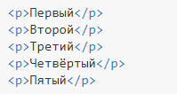
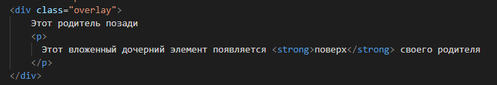

Позиционирование
Одной из лучших сторон CSS является то, что стили дают нам возможность позиционировать содержимое и элементы на странице практически любым мыслимым образом. Это вносит структурность в наш дизайн и помогает сделать контент более наглядным.
Даже без применения какого-либо CSS, HTML-документ уже стилизован. Его содержимое следует естественному потоку, напрямую зависящему от структуры HTML.
Но на веб-страницах часто нужны элементы, которые должны позиционироваться определённым образом, так, чтобы они подходили для конкретного дизайна, а это требует нарушения потока.
- Поток
- Позиционирование через float
- Позиционирование через inline-block
- Уникальное позиционирование элементов через position
- Свойство z-index
Поток
HTML документ представляет собой живой документ.
Даже без какого-либо применения CSS, HTML-документ уже содержит свои собственные правила:
- изменчивость: как содержимое адаптируется к размерам браузера;
- очерёдность: порядок, в котором появляются элементы;
- наложение: как элементы появляются друг над другом.
Это естественное поведение является логичным.
Изменчивость
В HTML содержимое — это король.
Все блочные элементы являются гибкими. Они естественным образом адаптируют свою компоновку, чтобы приспособить внутреннее содержимое:
| width: 100% | Блок будет занимать всю доступную ширину. |
| Перенос слов | Если встроенное содержимое в блоке не помещается на одной строке, оно будет продолжено на новой строке. |
| height: auto | Высота блока изменяется автоматически, чтобы она соответствовала размеру его содержимого. |
Блочный элемент будет заполнять всю доступную ширину, а его высота будет изменяться автоматически в зависимости от размера его содержимого.
Этот элемент будет выталкиваться вниз в зависимости от высоты своих предшественников.
- Блочный элемент по умолчанию занимает полную ширину.
- Значение height равно высоте его содержимого.
Очерёдность
Элементы HTML отображаются в том порядке, в котором они записаны в коде. Первый в коде — первый в браузере.
Каждый блок появляется в том порядке, в котором он появляется в коде HTML, сверху вниз.

Наложение
У браузера есть три измерения.
Каждый элемент HTML принадлежит воображаемому слою.
Порядок наложения зависит от того, как элементы вложены друг в друга: дочерние элементы появляются поверх своих родителей.
- Каждый вложенный элемент появляется поверх своего родителя.
- Чем глубже он по иерархии, тем выше в наложении.
Порядок наложения

Нарушение потока
Хотя поведение браузера по умолчанию является эффективным, этого бывает недостаточно для нужд вашего дизайна.
Некоторые свойства CSS позволяют нарушить поток:
- height и width могут поменять изменчивость элемента;
- float нарушает поведение элемента, а также его окружения;
- значения absolute и fixed у свойства position удаляют элемент из потока;
- z-index может менять порядок наложения элементов.